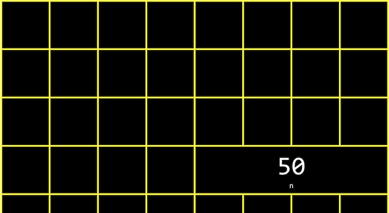
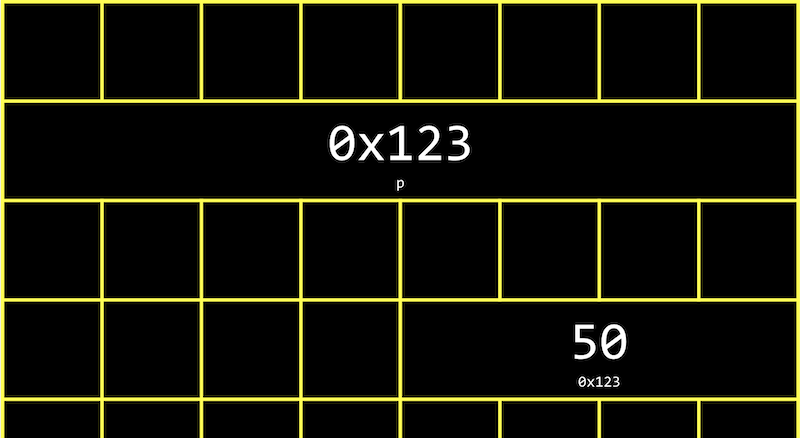
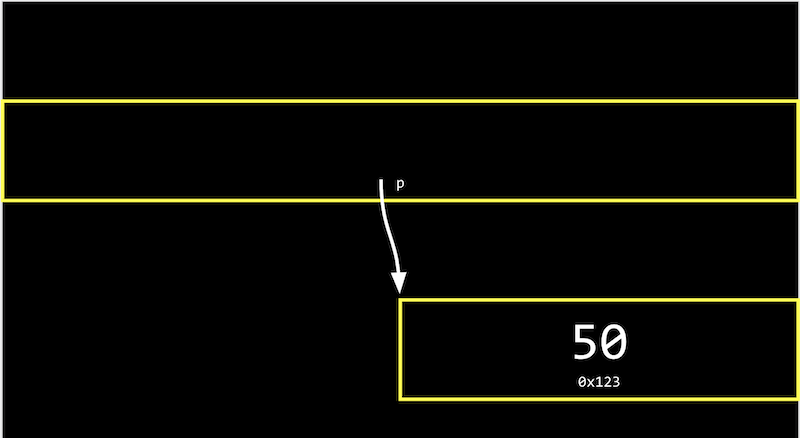
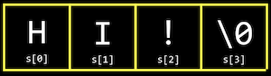
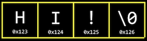
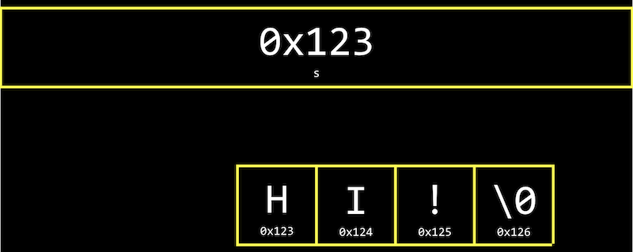
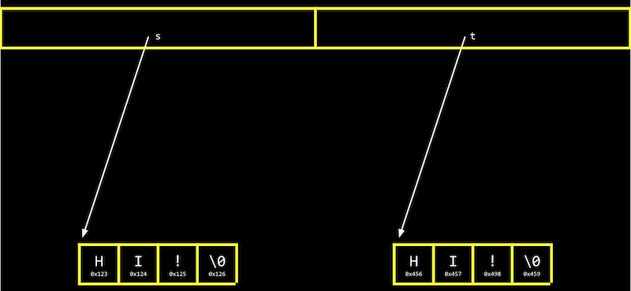
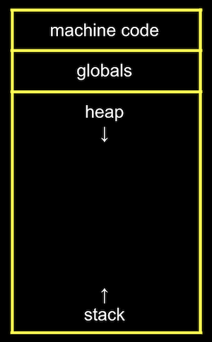
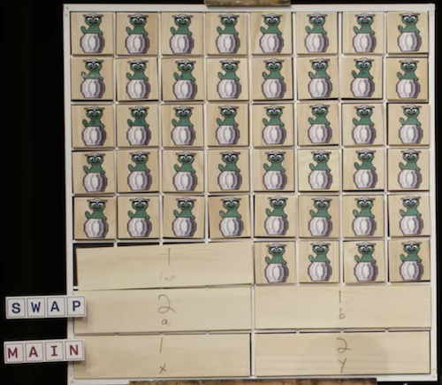
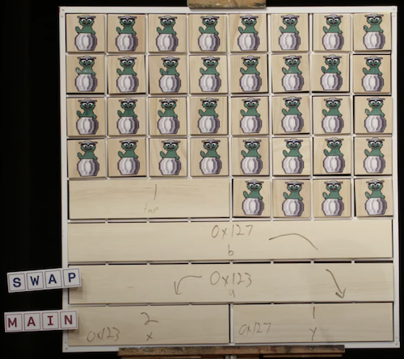

Lecture 4
- Hexadecimal
- Addresses
- Pointers
- Strings
- Pointer arithmetic
- Compare and copy
- valgrind
- Garbage values
- Swap
- Memory layout
- scanf
- Files
- Graphics
Hexadecimal
- In week 2, we talked about memory and how each byte has an address, or identifier, so we can refer to where our data are actually stored.
- It turns out that, by convention, the addresses for memory use the counting system hexadecimal, or base-16, where there are 16 digits: 0-9, and A-F as equivalents to 10-15.
- Let’s consider a two-digit hexadecimal number:
16^1 16^0 0 A- Here, the A in the ones place (since 16^0 = 1) has a decimal value of 10. We can keep counting until
0F, which is equivalent to 15 in decimal.
- Here, the A in the ones place (since 16^0 = 1) has a decimal value of 10. We can keep counting until
- After
0F, we need to carry the one, as we would go from 09 to 10 in decimal:16^1 16^0 1 0- Here, the
1has a value of 16^1 * 1 = 16, so10in hexadecimal is 16 in decimal.
- Here, the
- With two digits, we can have a maximum value of
FF, or 16^1 * 15 + 16^0 * 15 = 240 + 15 = 255, which is the same maximum value with 8 bits of binary. So two digits in hexadecimal can conveniently represent the value of a byte in binary. (Each digit in hexadecimal, with 16 values, maps to four bits in binary.) - In writing, we indicate a value is in hexadecimal by prefixing it with
0x, as in0x10, where the value is equal to 16 in decimal, as opposed to 10. - The RGB color system conventionally uses hexadecimal to describe the amount of each color. For example,
000000in hexadecimal represents 0 for each of red, green, and blue, for a combined color of black. AndFF0000would be 255, or the highest possible, amount of red.FFFFFFwould indicate the highest value of each color, combining to be the brightest white. With different values for each color, we can represent millions of different colors. - For our computer’s memory, too, we’ll use hexadecimal for each address or location.
Addresses
- We might create a value
n, and print it out:#include <stdio.h> int main(void) { int n = 50; printf("%i\n", n); } - In our computer’s memory, there are now 4 bytes somewhere that have the binary value of 50, labeled
n:
 - It turns out that, with the billions of bytes in memory, those bytes for the variable
nstarts at some location, which might look something like0x12345678. - In C, we can actually see the address with the
&operator, which means “get the address of this variable”:#include <stdio.h> int main(void) { int n = 50; printf("%p\n", &n); }%pis the format code for an address.- In the CS50 IDE, we see an address like
0x7ffd80792f7c. The value of the address in itself is not useful, since it’s just some location in memory that the variable is stored in; instead, the important idea is that we can use this address later.
- The
*operator, or the dereference operator, lets us “go to” the location that a pointer is pointing to. - For example, we can print
*&n, where we “go to” the address ofn, and that will print out the value ofn,50, since that’s the value at the address ofn:#include <stdio.h> int main(void) { int n = 50; printf("%i\n", *&n); }
Pointers
- A variable that stores an address is called a pointer, which we can think of as a value that “points” to a location in memory. In C, pointers can refer to specific types of values.
- We can use the
*operator (in an unfortunately confusing way) to declare a variable that we want to be a pointer:#include <stdio.h> int main(void) { int n = 50; int *p = &n; printf("%p\n", p); }- Here, we use
int *pto declare a variable,p, that has the type of*, a pointer, to a value of typeint, an integer. Then, we can print its value (an address, something like0x12345678), or print the value at its location withprintf("%i\n", *p);.
- Here, we use
- In our computer’s memory, the variables will look like this:
- Since
pis a variable itself, it’s somewhere in memory, and the value stored there is the address ofn. - Modern computer systems are “64-bit”, meaning that they use 64 bits to address memory, so a pointer will in reality be 8 bytes, twice as big as an integer of 4 bytes.
- Since
- We can abstract away the actual value of the addresses, since they’ll be different as we declare variables in our programs and not very useful, and simply think of
pas “pointing at” some value:
 - In the real world, we might have a mailbox labeled “p”, among many mailboxes with addresses. Inside our mailbox, we can put a value like
0x123, which is the address of some other mailboxn, with the address0x123.
Strings
- A variable declared with
string s = "HI!";will be stored one character at a time in memory. And we can access each character withs[0],s[1],s[2], ands[3]:
 - But it turns out that each character, since it’s stored in memory, also has some unique address, and
sis actually just a pointer with the address of the first character:
 - And the variable
sstores the address of the first character of the string. The value\0is the only indicator of the end of the string:
- Since the rest of the characters are in an array, back-to-back, we can start at the address in
sand continue reading one character at a time from memory until we reach\0.
- Since the rest of the characters are in an array, back-to-back, we can start at the address in
- Let’s print out a string:
#include <cs50.h> #include <stdio.h> int main(void) { string s = "HI!"; printf("%s\n", s); } - We can see the value stored in
swithprintf("%p\n", s);, and we see something like0x4006a4since we’re printing the address in memory of the first character of the string. - If we add another line,
printf("%p\n", &s[1]);, we indeed see the next address in memory:0x4006a5. - It turns out that
string sis just a pointer, an address to some character in memory. - In fact, the CS50 library defines a type that doesn’t exist in C,
string, aschar *, withtypedef char *string;. The custom type,string, is defined as just achar *withtypedef. Sostring s = "HI!"is the same aschar *s = "HI!";. And we can use strings in C in the exact same way without the CS50 library, by usingchar *.
Pointer arithmetic
- Pointer arithmetic is mathematical operations on addresses with pointers.
- We can print out each character in a string (using
char *directly):#include <stdio.h> int main(void) { char *s = "HI!"; printf("%c\n", s[0]); printf("%c\n", s[1]); printf("%c\n", s[2]); } - But we can go to addresses directly:
#include <stdio.h> int main(void) { char *s = "HI!"; printf("%c\n", *s); printf("%c\n", *(s+1)); printf("%c\n", *(s+2)); }*sgoes to the address stored ins, and*(s+1)goes to the location in memory with an address one byte higher, or the next character.s[1]is syntactic sugar for*(s+1), equivalent in function but more human-friendly to read and write.
- We can even try to go to addresses in memory that we shouldn’t, like with
*(s+10000), and when we run our program, we’ll get a segmentation fault, or crash as a result of our program touching memory in a segment it shouldn’t have.
Compare and copy
- Let’s try to compare two integers from the user:
#include <cs50.h> #include <stdio.h> int main(void) { int i = get_int("i: "); int j = get_int("j: "); if (i == j) { printf("Same\n"); } else { printf("Different\n"); } }- We compile and run our program, and it works as we’d expect, with the same values of the two integers giving us “Same” and different values “Different”.
- When we try to compare two strings, we see that the same inputs are causing our program to print “Different”:
#include <cs50.h> #include <stdio.h> int main(void) { char *s = get_string("s: "); char *t = get_string("t: "); if (s == t) { printf("Same\n"); } else { printf("Different\n"); } }- Even when our inputs are the same, we see “Different” printed.
- Each “string” is a pointer,
char *, to a different location in memory, where the first character of each string is stored. So even if the characters in the string are the same, this will always print “Different”.
- For example, our first string might be at address 0x123, our second might be at 0x456, and
swill have the value of0x123, pointing at that location, andtwill have the value of0x456, pointing at another location:
 - And
get_string, this whole time, has been returning just achar *, or a pointer to the first character of a string from the user. Since we calledget_stringtwice, we got two different pointers back. - Let’s try to copy a string:
#include <cs50.h> #include <ctype.h> #include <stdio.h> int main(void) { char *s = get_string("s: "); char *t = s; t[0] = toupper(t[0]); printf("s: %s\n", s); printf("t: %s\n", t); }- We get a string
s, and copy the value ofsintot. Then, we capitalize the first letter int. - But when we run our program, we see that both
sandtare now capitalized. - Since we set
sandtto the same value, or the same address, they’re both pointing to the same character, and so we capitalized the same character in memory!
- We get a string
- To actually make a copy of a string, we have to do a little more work, and copy each character in
sto somewhere else in memory:#include <cs50.h> #include <ctype.h> #include <stdio.h> #include <stdlib.h> #include <string.h> int main(void) { char *s = get_string("s: "); char *t = malloc(strlen(s) + 1); for (int i = 0, n = strlen(s); i < n + 1; i++) { t[i] = s[i]; } t[0] = toupper(t[0]); printf("s: %s\n", s); printf("t: %s\n", t); }- We create a new variable,
t, of the typechar *, withchar *t. Now, we want to point it to a new chunk of memory that’s large enough to store the copy of the string. Withmalloc, we allocate some number of bytes in memory (that aren’t already used to store other values), and we pass in the number of bytes we’d like to mark for use. We already know the length ofs, and we add 1 to that for the terminating null character. So, our final line of code ischar *t = malloc(strlen(s) + 1);. - Then, we copy each character, one at a time, with a
forloop. We usei < n + 1, since we actually want to go up ton, the length of the string, to ensure we copy the terminating character in the string. In the loop, we sett[i] = s[i], copying the characters. While we could use*(t+i) = *(s+i)to the same effect, it’s arguably less readable. - Now, we can capitalize just the first letter of
t.
- We create a new variable,
- We can add some error-checking to our program:
#include <cs50.h> #include <ctype.h> #include <stdio.h> #include <stdlib.h> #include <string.h> int main(void) { char *s = get_string("s: "); char *t = malloc(strlen(s) + 1); if (t == NULL) { return 1; } for (int i = 0, n = strlen(s); i < n + 1; i++) { t[i] = s[i]; } if (strlen(t) > 0) { t[0] = toupper(t[0]); } printf("s: %s\n", s); printf("t: %s\n", t); free(t); }- If our computer is out of memory,
mallocwill returnNULL, the null pointer, or a special value that indicates there isn’t an address to point to. So we should check for that case, and exit iftisNULL. - We could also check that
thas a length, before trying to capitalize the first character. - Finally, we should free the memory we allocated earlier, which marks it as usable again by some other program. We call the
freefunction and pass in the pointert, since we’re done with that chunk of memory. (get_string, too, callsmallocto allocate memory for strings, and callsfreejust before themainfunction returns.)
- If our computer is out of memory,
- We can actually also use the
strcpyfunction, from the C’s string library, withstrcpy(t, s);instead of our loop, to copy the stringsintot.
valgrind
valgrindis a command-line tool that we can use to run our program and see if it has any memory leaks, or memory we’ve allocated without freeing, which might eventually cause out computer to run out of memory.- Let’s build a string but allocate less than what we need in
memory.c:#include <stdio.h> #include <stdlib.h> int main(void) { char *s = malloc(3); s[0] = 'H'; s[1] = 'I'; s[2] = '!'; s[3] = '\0'; printf("%s\n", s); }- We also don’t free the memory we’ve allocated.
- We’ll run
valgrind ./memoryafter compiling, and we’ll see a lot of output, but we can runhelp50 valgrind ./memoryto help explain some of those messages. For this program, we see snippets like “Invalid write of size 1”, “Invalid read of size 1”, and finally “3 bytes in 1 blocks are definitely lost”, with line numbers nearby. Indeed, we’re writing to memory,s[3], which is not part of what we originally allocated fors. And when we print outs, we’re reading all the way tos[3]as well. And finally,sisn’t freed at the end of our program.
- We can make sure to allocate the right number of bytes, and free memory at the end:
#include <stdio.h> #include <stdlib.h> int main(void) { char *s = malloc(4); s[0] = 'H'; s[1] = 'I'; s[2] = '!'; s[3] = '\0'; printf("%s\n", s); free(s); }- Now,
valgrinddoesn’t show any warning messages.
- Now,
Garbage values
- Let’s take a look at the following:
int main(void) { int *x; int *y; x = malloc(sizeof(int)); *x = 42; *y = 13; y = x; *y = 13; }- We declare two pointers to integers,
xandy, but don’t assign them values. We usemallocto allocate enough memory for an integer withsizeof(int), and store it inx.*x = 42goes to the addressxpoints to, and sets that location in memory to the value 42. - With
*y = 13, we’re trying to put the value 13 at the addressypoints to. But since we never assignedya value, it has a garbage value, or whatever unknown value that was in memory, from whatever program was running in our computer before. So when we try to go to the garbage value inyas an address, we’re going to some unknown address, which is likely to cause a segmentation fault, or segfault.
- We declare two pointers to integers,
- We watch Pointer Fun with Binky, an animated video demonstrating the concepts in the code above.
- We can print out garbage values, by declaring an array but not setting any of its values:
#include <stdio.h> int main(void) { int scores[3]; for (int i = 0; i < 3; i++) { printf("%i\n", scores[i]); } }- When we compile and run this program, we see various values printed.
Swap
- Let’s try to swap the values of two integers.
#include <stdio.h> void swap(int a, int b); int main(void) { int x = 1; int y = 2; printf("x is %i, y is %i\n", x, y); swap(x, y); printf("x is %i, y is %i\n", x, y); } void swap(int a, int b) { int tmp = a; a = b; b = tmp; }- In the real world, if we had a red liquid in one glass, and a blue liquid in another, and we wanted to swap them, we would need a third glass to temporarily hold one of the liquids, perhaps the red glass. Then we can pour the blue liquid into the first glass, and finally the red liquid from the temporary glass into the second one.
- In our
swapfunction, we have a third variable to use as temporary storage space as well. We putaintotmp, and then setato the value ofb, and finallybcan be changed to the original value ofa, now intmp.
- But, if we tried to use that function in a program, we don’t see any changes. It turns out that the
swapfunction gets its own variables,aandbwhen they are passed in, that are copies ofxandy, and so changing those values don’t changexandyin themainfunction.
Memory layout
- Within our computer’s memory, the different types of data that need to be stored for our program are organized into different sections:
- The machine code section is our compiled program’s binary code. When we run our program, that code is loaded into the “top” of memory.
- Just below, or in the next part of memory, are global variables we declare in our program.
- The heap section is an empty area from where
malloccan get free memory for our program to use. As we callmalloc, we start allocating memory from the top down. - The stack section is used by functions in our program as they are called, and grows upwards. For example, our
mainfunction is at the very bottom of the stack and has the local variablesxandy. Theswapfunction, when it’s called, has its own area of memory that’s on top ofmain’s, with the local variablesa,b, andtmp:

- Once the function
swapreturns, the memory it was using is freed for the next function call.xandyare arguments, so they’re copied asaandbforswap, so we don’t see our changes back inmain. - By passing in the address of
xandy, ourswapfunction can actually work:#include <stdio.h> void swap(int *a, int *b); int main(void) { int x = 1; int y = 2; printf("x is %i, y is %i\n", x, y); swap(&x, &y); printf("x is %i, y is %i\n", x, y); } void swap(int *a, int *b) { int tmp = *a; *a = *b; *b = tmp; }- The addresses of
xandyare passed in frommaintoswapwith&xand&y, and we use theint *asyntax to declare that ourswapfunction takes in pointers. We save the value ofxtotmpby following the pointera, and then take the value ofyby following the pointerb, and store that to the locationais pointing to (x). Finally, we store the value oftmpto the location pointed to byb(y), and we’re done:

- The addresses of
- If we call
mallocfor too much memory, we will have a heap overflow, since we end up going past our heap. Or, if we call too many functions without returning from them, we will have a stack overflow, where our stack has too much memory allocated as well. - Let’s implement drawing Mario’s pyramid, by calling a function:
#include <cs50.h> #include <stdio.h> void draw(int h); int main(void) { int height = get_int("Height: "); draw(height); } void draw(int h) { for (int i = 1; i <= h; i++) { for (int j = 1; j <= i; j++) { printf("#"); } printf("\n"); } } - We can change
drawto be recursive:void draw(int h) { draw(h - 1); for (int i = 0; i < h; i++) { printf("#"); } printf("\n"); }- When we try to compile this with
make, we see a warning that thedrawfunction will call itself recursively without stopping. So we’ll useclangwithout the extra checks, and when we run this program, we get a segmentation fault right away.drawis calling itself over and over, and we ran out of memory on the stack.
- When we try to compile this with
- By adding a base case, the
drawfunction will stop calling itself at some point:void draw(int h) { if (h == 0) { return; } draw(h - 1); for (int i = 0; i < h; i++) { printf("#"); } printf("\n"); }- But if we enter a large enough value for the height, like
2000000000, we’ll still run out of memory, since we’re callingdrawtoo many times without returning.
- But if we enter a large enough value for the height, like
- A buffer overflow occurs when we go past the end of a buffer, some chunk of memory we’ve allocated like an array, and access memory we shouldn’t be.
scanf
- We can implement
get_intourselves with a C library function,scanf:#include <stdio.h> int main(void) { int x; printf("x: "); scanf("%i", &x); printf("x: %i\n", x); }scanftakes a format,%i, so the input is “scanned” for that format. We also pass in the address in memory where we want that input to go. Butscanfdoesn’t have much error checking, so we might not get an integer.
- We can try to get a string the same way:
#include <stdio.h> int main(void) { char *s; printf("s: "); scanf("%s", s); printf("s: %s\n", s); }- But we haven’t actually allocated any memory for
s, so we need to callmallocto allocate memory for characters for our string. We could also usechar s[4];to declare an array of four characters. Then,swill be treated as a pointer to the first character inscanfandprintf. - Now, if the user types in a string of length 3 or less, our program will work safely. But if the user types in a longer string,
scanfmight be trying to write past the end of our array into unknown memory, causing our program to crash. get_stringfrom the CS50 library continuously allocates more memory asscanfreads in more characters, so it doesn’t have that issue.
- But we haven’t actually allocated any memory for
Files
- With the ability to use pointers, we can also open files, like a digital phone book:
#include <cs50.h> #include <stdio.h> #include <string.h> int main(void) { FILE *file = fopen("phonebook.csv", "a"); if (file == NULL) { return 1; } char *name = get_string("Name: "); char *number = get_string("Number: "); fprintf(file, "%s,%s\n", name, number); fclose(file); }fopenis a new function we can use to open a file. It will return a pointer to a new type,FILE, that we can read from and write to. The first argument is the name of the file, and the second argument is the mode we want to open the file in (rfor read,wfor write, andafor append, or adding to).- We’ll add a check to exit if we couldn’t open the file for some reason.
- After we get some strings, we can use
fprintfto print to a file. - Finally, we close the file with
fclose.
- Now we can create our own CSV files, a file of comma-separated values (like a mini-spreadsheet), programmatically.
Graphics
- We can read in binary and map them to pixels and colors, to display images and videos. With a finite number of bits in an image file, though, we can only zoom in so far before we start seeing individual pixels.
- With artificial intelligence and machine learning, however, we can use algorithms that can generate additional details that weren’t there before, by guessing based on other data.
- Let’s look at a program that opens a file and tells us if it’s a JPEG file, an image file in a particular format:
#include <stdint.h> #include <stdio.h> typedef uint8_t BYTE; int main(int argc, char *argv[]) { // Check usage if (argc != 2) { return 1; } // Open file FILE *file = fopen(argv[1], "r"); if (!file) { return 1; } // Read first three bytes BYTE bytes[3]; fread(bytes, sizeof(BYTE), 3, file); // Check first three bytes if (bytes[0] == 0xff && bytes[1] == 0xd8 && bytes[2] == 0xff) { printf("Maybe\n"); } else { printf("No\n"); } // Close file fclose(file); }- First, we define a
BYTEas 8 bits, so we can refer to a byte as a type more easily in C. - Then, we try to open a file (checking that we indeed get a non-NULL file back), and read the first three bytes from the file with
fread, into a buffer calledbytes. - We can compare the first three bytes (in hexadecimal) to the three bytes required to begin a JPEG file. If they’re the same, then our file is likely to be a JPEG file (though, other types of files may still begin with those bytes). But if they’re not the same, we know it’s definitely not a JPEG file.
- First, we define a
- We can even copy files ourselves, one byte at a time now:
#include <stdint.h> #include <stdio.h> #include <stdlib.h> typedef uint8_t BYTE; int main(int argc, char *argv[]) { // Ensure proper usage if (argc != 3) { fprintf(stderr, "Usage: copy SOURCE DESTINATION\n"); return 1; } // open input file FILE *source = fopen(argv[1], "r"); if (source == NULL) { printf("Could not open %s.\n", argv[1]); return 1; } // Open output file FILE *destination = fopen(argv[2], "w"); if (destination == NULL) { fclose(source); printf("Could not create %s.\n", argv[2]); return 1; } // Copy source to destination, one BYTE at a time BYTE buffer; while (fread(&buffer, sizeof(BYTE), 1, source)) { fwrite(&buffer, sizeof(BYTE), 1, destination); } // Close files fclose(source); fclose(destination); return 0; }- We use
argvto get arguments, using them as filenames to open files to read from and one to write to. - Then, we read one byte from the
sourcefile into a buffer, and write that byte to thedestinationfile. We can use awhileloop to callfread, which will stop once there are no more bytes to read.
- We use
- We can use these abilities to read and write files, recovering images from a file, and adding filters to images by changing the bytes in them, in this week’s problem set!